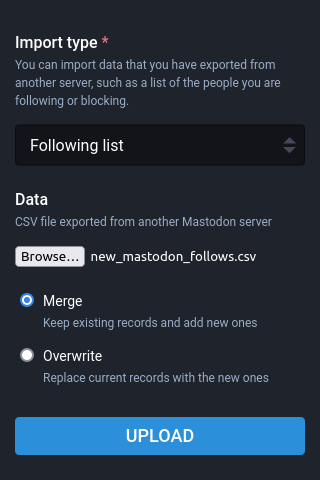

Click the buttons below to give Twitodon access to your Twitter and Mastodon accounts. Don't worry, we won't be able to see your passwords - we use a secure, open standard called OAuth thatt provides a safe way for 3rd parties to access website information without divulging user passwords.
Twitodon will cycle through your Twitter "following" list, checking to see if any of those accounts have also used this service and therefore linked their Twitter account to their Mastodon account. If they have, you'll get their Mastodon information in a nice file that you can upload.
Unfortunately there is no way of matching Twitter accounts to Mastodon accounts unless they too have logged into Twitodon previously. Because of this, we recommended you check back with us regularly to keep up-to-date as more people join the fediverse.
Information about how your data is handled is available in the Privacy Policy.
Step 1. Login With Twitter.
Step 2. Login With Mastodon by entering your Mastodon host's web address:
We have scanned 0 of 0 users you follow on Twitter and discovered 0 Twitter users on Mastodon who have previously linked their Twitter and Mastodon accounts.
Step 3. Download matching users in CSV format to import into your Mastodon account.
Step 4. Revoke our access to Twitter. Use the button that appears when you are successfully logged into Twitodon with your Twitter account. Your login session has a time limit, so the buttons will not appear until you refresh your session by logging in again. When visible, click the Revoke button to disassociate Twitodon from your Twitter account.
Step 5. Unfortunately Mastodon doesn't provide Twitodon the ability to revoke access, but you can still logout. To completely revoke access navigate to your Mastodon instance, log in, and go to your settings/preferences page, select "account" followed by "authorized apps", find the Twitodon app and click the revoke button.
Step 6.
Navigate to your Mastodon instance's import page: https://mastodon.social/settings/import

new_mastodon_follows.csv, that you downloaded from Twitodon.